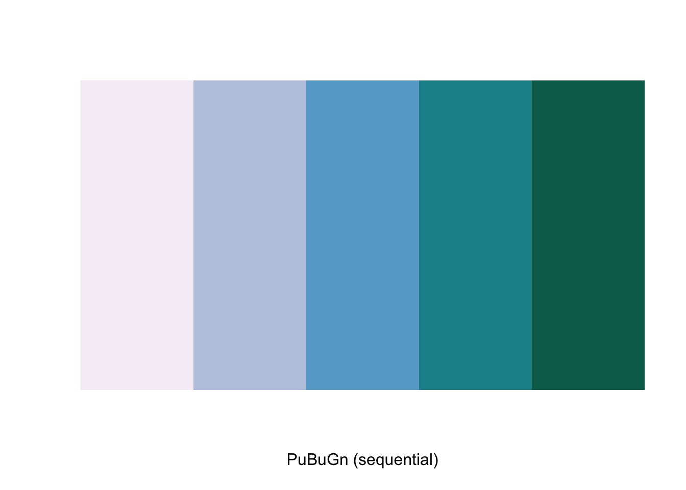

Visualize Areal Data - Choropleth Mapping (a.k.a Thematic Maps)
Research Question
Once we have downloaded the contextual data and generated the access metrics, we can start visualizing them to identify any spatial patterns. This can help identify whether a variable is homogeneously distributed across space or do we see clustering & spatial heterogeneity. In this tutorial we will cover methods to plot data variables spatially i.e. create thematic maps, technically known as choropleth maps. We will cover the most commonly used types of choropleth mapping techniques employed in R. Please note the methods covered here are mere an introduction to spatial plotting.
Environment Setup
To replicate the codes & functions illustrated in this tutorial, you’ll need to have R and RStudio downloaded and installed on your system. This tutorial assumes some familiarity with the R programming language.
Packages used
We will use the following packages in this tutorial:
tidyverse: to manipulate datatmap: to visualize and create mapssf: to read/write and manipulate spatial data
Required Inputs and Expected Outputs
We will using the race data for Illinois downloaded & saved as a shapefile using the get-ACS_Data tutorial from the Census Bureau.
Our output will be three thematic maps highlighting the distribution of percentage hispanic population at a county level across the state of Illinois.
Load data
We will read in the shapefile with percentage hispanic population at the county level for the state of Illinois for year 2018.
Alternatively, if you have not saved the dataset from get-ACS-Data tutorial, you can download it using the code below.
require(tidycensus)
pctHispanic <- tidycensus::get_acs(geography = 'county', state = 'IL',
variables = c(totPop18 = "B01001_001",
hispanic ="B03003_003",
notHispanic = "B03003_002",
white = "B02001_002",
afrAm = "B02001_003",
asian = "B02001_005"),
year = 2018, geometry = TRUE) %>%
select(GEOID, NAME, variable, estimate) %>%
spread(variable, estimate) %>%
mutate(hispPr18 = hispanic/totPop18, WhitePr18 = white/totPop18,
AfrAmPr18 = afrAm/totPop18, AsianPr18 = asian/totPop18) %>%
select(GEOID,totPop18,hispPr18,WhitePr18,AfrAmPr18, AsianPr18)Lets check the dataset structure.
## Simple feature collection with 6 features and 6 fields
## geometry type: MULTIPOLYGON
## dimension: XY
## bbox: xmin: -91.51308 ymin: 36.9703 xmax: -88.70541 ymax: 42.49505
## geographic CRS: NAD83
## GEOID totPop18 hispPr18 WhitePr18 AfrAmPr18
## 1 17001 66427 0.01537026 0.9306306 0.040826772
## 2 17003 6532 0.01117575 0.6243111 0.332057563
## 3 17005 16712 0.03458593 0.9088679 0.062410244
## 4 17007 53606 0.21376338 0.8741745 0.022199008
## 5 17009 6675 0.04284644 0.7742322 0.204344569
## 6 17011 33381 0.08972170 0.9361613 0.009316677
## AsianPr18 geometry
## 1 0.0081292246 MULTIPOLYGON (((-91.51297 4...
## 2 0.0009185548 MULTIPOLYGON (((-89.51839 3...
## 3 0.0117280996 MULTIPOLYGON (((-89.63926 3...
## 4 0.0118083797 MULTIPOLYGON (((-88.94098 4...
## 5 0.0055430712 MULTIPOLYGON (((-90.91703 3...
## 6 0.0086576196 MULTIPOLYGON (((-89.86235 4...In a shapefile, the ‘geometry’ column provides the geographic information/boundaries that we can map. We can do a quick plot using:

Before we move ahead, lets convert the percentages for easy plotting.
Thematic Plotting
We will be using tmap package for plotting spatial data distributions. The package syntax has similarities with ggplot2 and follows the same idea of A Layered Grammar of Graphics.
- for each input data layer use
tm_shape(), - followed by the method to plot it, e.g
tm_fill() or tm_dots() or tm_line() or tm_borders()etc.
Similar to ggplot2, aesthetics can be provided for each layer and plot layout can be manipulated using tm_layout(). For more details on tmap usage & functionality, check tmap documentation. The previous map we plotted using plot can be mapped using tmap as in the code below.
## tmap mode set to plotting
In tmap, the classification scheme is set by the style option in tm_fill() and the default style is pretty. Lets plot the distribution of percentage of hispanic population by county across the state of Illinois with default style using the code below. We can also change the color palette used to depict the spatial distribution. See Set Color Palette in Appendix for more details on that.
tm_shape(pctHispanic) + tm_fill('hispPr18', title = 'PctHispanic% - Pretty') +
tm_borders() +
tm_layout(frame = FALSE, legend.outside = TRUE, legend.outside.position = 'right',
legend.title.size = 0.9,
main.title = 'Pct of hispanic population by county, IL 2018',
main.title.size = 0.9)
We will be plotting the spatial distribution of variable hispPr18 for the state of Illinois using three methods.
- Quantile
- Natural Breaks
- Standard Deviation
For detailed documentation on choropleth mapping and methods use check GeoDa Center Documentation.
Quantile
A quantile map is based on sorted values for the variable that are then grouped into bins such that each bin has the same number of observations. It is obtained by setting style = 'quantile' and n = no of bins arguments in tm_fill().
p1 <- tm_shape(pctHispanic) + tm_fill('hispPr18', title = 'PctHispanic% - Quantile',
style = 'quantile', n = 5) + tm_borders() +
tm_layout(frame = FALSE,legend.outside = TRUE,
legend.outside.position = 'right', legend.title.size =0.9,
main.title = 'Pct of hispanic population by county, IL 2018',
main.title.size = 0.9)
#tmap_save(p1, 'PctHisp_18_Quantile.png') # save the map in a .png file
p1
Natural Breaks
Natural breaks or jenks distribution uses a nonlinear algorithm to cluster data into groups such that the intra-bin similarity is maximized and inter-bin dissimilarity is minimized. It is obtained by setting style = 'jenks' and n = no. of bins in the tm_fill().
As we can see, jenks method better classifies the dataset in review than the quantile distribution. There is no correct method to use and the choice of classification method is dependent on the problem & dataset used.
p2 <- tm_shape(pctHispanic) + tm_fill('hispPr18', title = 'PctHispanic% - Jenks',
style = 'jenks', n = 5) + tm_borders() +
tm_layout(frame = FALSE,legend.outside = TRUE,
legend.outside.position = 'right', legend.title.size =0.9,
main.title = 'Pct of hispanic population by county, IL 2018',
main.title.size = 0.9)
#tmap_save(p2, 'PctHisp_18_Jenks.png')# save the map in a .png file
p2
Standard Deviation
A standard deviation map normalizes the dataset (mean = 0, stdev = 1) and transforms it into units of stdev (given mean =0). It helps identify outliers in the dataset. It is obtained by setting style = 'sd' in the tm_fill().
The normalization process can create bins with negative values, which in this case don’t necessarily make sense for the dataset, but it still helps identify the outliers.
p3 <- tm_shape(pctHispanic) + tm_fill('hispPr18', title = 'PctHispanic% - Stdev',
style = 'sd') + tm_borders() +
tm_layout(frame = FALSE, legend.outside = TRUE,
legend.outside.position = 'right', legend.title.size =0.9,
main.title = 'Pct of hispanic population by county, IL 2018',
main.title.size = 0.9)
#tmap_save(p3, 'PctHisp_18_Stdev.png')# save the map in a .png file
p3
Appendix
Set Color Palette
The range of colors used to depict the distribution in the map can be set by modifying the palette argument in tm_fill(). For example, we can use Blues palette to create the map below.
tm_shape(pctHispanic) + tm_fill('hispPr18', title = 'PctHispanic% - Jenks',
style = 'jenks', n = 5, palette = 'Blues') + tm_borders() +
tm_layout(frame = FALSE,legend.outside = TRUE,
legend.outside.position = 'right', legend.title.size =0.9,
main.title = 'Pct of hispanic population by county, IL 2018',
main.title.size = 0.9)
Use ColorBrewer
To build aesthetically pleasing and easy-to-read maps, we recommend using color palette schemes recommended in ColorBrewer 2.0 developed by Cynthia Brewer. The website distinguishes between sequential(ordered), diverging(spread around a center) & qualitative(categorical) data. Information on these palettes cab be displayed in R using RColorBrewer package.
We can get the hex values for the colors used in a specific palette with n bins & plot the corresponding colors using code below.
## [1] "#F6EFF7" "#BDC9E1" "#67A9CF" "#1C9099" "#016C59"
We can update the jenks map by using this sequential color scheme and changing the transparency using alpha = 0.8 as below.
tm_shape(pctHispanic) + tm_fill('hispPr18', title = 'PctHispanic% - Jenks',
style = 'jenks', n = 5, palette = 'PuBuGn') + tm_borders() +
tm_layout(frame = FALSE,
legend.outside = TRUE, legend.outside.position = 'right', legend.title.size =0.9,
main.title = 'Pct of hispanic population by county, IL 2018',
main.title.size = 0.9)
We can also update the stdev map by using a diverging color scheme as below.
tm_shape(pctHispanic) + tm_fill('hispPr18', title = 'PctHispanic% - Stdev',
style = 'sd', palette = '-RdBu', alpha = 0.9) + tm_borders() +
tm_layout(frame = FALSE,
legend.outside = TRUE, legend.outside.position = 'right', legend.title.size =0.9,
main.title = 'Pct of hispanic population by county, IL 2018',
main.title.size = 0.9)
Example - using ColorBrewer for US wide datasets
Download and plot the distribution of median household income in US by county for year 2018.
require(tidycensus)
medianHHInc <- tidycensus::get_acs('county', variables = c(median_HHInc = 'B19013_001'),
year = 2018, geometry = TRUE, output = 'wide')
medianHHInc <- medianHHInc %>% separate(NAME, c("CountyName", "State"), sep = ', ') %>%
filter(!(State %in% c('Puerto Rico','Alaska','Hawaii'))) ## contiguous US
tm_shape(medianHHInc) + tm_fill('median_HHIncE', title = 'Median Household Income $ - Jenks',
style = 'jenks', n = 7, palette = 'PuBuGn') +
tm_borders(alpha = 0.4) +
tm_layout(frame = FALSE,
legend.outside = TRUE, legend.outside.position = 'right', legend.title.size =0.9,
main.title = 'Distribution of Household Income, by county, US 2018',
main.title.position = c('center','top'), main.title.size = 0.9)
Contributors and Further Resources
Contributors
Moksha Menghaney, University of Chicago is the principal author of the initial version of this tutorial. Helpful improvements provided by Marynia Kolak.
Email: mmenghaney@uchicago.edu for any issues/comments.